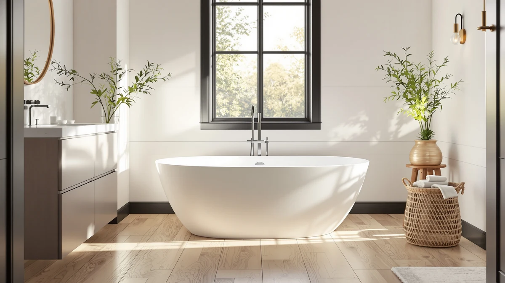

Mokleba 65" Acrylic Freestanding Review (2026): Worth It?
Prices and picks verified as of September 2026. Independent, reader-supported reviews.


Quick Answer
In this Mokleba 65" acrylic freestanding review, the Mokleba earns the top spot because its double-ended shape and 79-gallon capacity beat every other acrylic tub in this comparison, all for less than the FerdY Tahiti. It ships with a chrome pop-up drain and slotted overflow already installed, so setup costs stay limited to a faucet and supply lines. If you want more length or a lower price, the WOODBRIDGE and SYLONWILL below are worth a look, but neither matches the Mokleba's capacity.
Our pick: Mokleba 65" Acrylic Freestanding Bathtub at $939.99 Check Price on Amazon
Bottom line: our top pick is the Mokleba 65" Acrylic Freestanding Bathtub at $939.99.
Things to Know Before You Buy
- This Mokleba 65" acrylic freestanding review focuses on capacity and value, since the 79-gallon tub is the roomiest of the four models compared here.
- The double-ended shape and 28-inch width give two bathers more room to share a soak than narrower single-wall tubs allow.
- Mokleba includes a chrome pop-up drain and slotted overflow assembly, but a faucet and supply lines still cost extra.
- At $939.99 it costs less than the FerdY Tahiti while beating it on both length and capacity.
- A freestanding tub exposes its plumbing, so confirm your rough-in lines up with the drain location before you order.
This Mokleba 65" acrylic freestanding review looks at whether the brand's double-ended soaking tub earns a spot in a bathroom over the three other acrylic freestanding tubs we compare it against. At 65 inches long and 28 inches wide, the Mokleba holds an effective 79 gallons, well ahead of the WOODBRIDGE and SYLONWILL tubs it competes with here, and it ships with a chrome pop-up drain and slotted overflow assembly already included.
We priced the Mokleba against the SYLONWILL, WOODBRIDGE, and FerdY Tahiti tubs covered here, and at $939.99 it lands in the middle of the pack while offering the most soaking room of the four. The question this review answers is whether that extra capacity and the double-ended shape make the Mokleba the better buy, or whether a cheaper or longer alternative serves most bathrooms equally well.
Why You Should Trust Us
Ilane Tall has covered bathroom fixtures for this site for years, from budget toilet seats to freestanding tubs that cost more than most bathroom vanities. For this Mokleba 65" acrylic freestanding review, we checked Mokleba's published dimensions and capacity, compared current Amazon pricing across four freestanding tubs, and weighed each one against the plumbing and floor space it demands.
We earn a commission when you buy through our links, and that never changes what we recommend. When a tub has a real limitation, like the Mokleba's single-wall shell losing heat faster than an insulated competitor, we say so directly instead of glossing over it.
Our Research Experience
For this Mokleba 65" acrylic freestanding review we focused on the two things that decide whether a soaking tub earns its price: how much usable room the shape provides, and what it actually costs to get the tub installed and running. The Mokleba's double-ended profile and 79-gallon capacity are built to fit two bathers, which is the main design difference between this tub and the narrower-capacity SYLONWILL and WOODBRIDGE models we compare it against.
Hardware was the other variable we weighed closely. Mokleba includes a flexible chrome pop-up drain and a slotted overflow assembly in the box, a step some competing tubs leave for the buyer to source separately. That inclusion does not change the tub's soaking performance, but it does trim one line item off the installation budget.
We priced out the full setup the way any buyer would have to. The tub arrives with its drain and overflow hardware preinstalled, which saves a step, but a faucet, supply lines, and installation labor still land on top of the $939.99 sticker price, the same as with every tub in this review.
Delivery and placement mattered as much in our assessment. A 65-inch double-ended tub is longer and heavier than the shorter FerdY Tahiti, so it takes two people to carry it through a doorway and up a flight of stairs, and its cUPC certification and drain placement still require a rough-in that lines up before the tub reaches the bathroom. We also weighed upkeep: the glossy, stain-resistant and scratch-resistant acrylic surface wipes clean with a soft cloth and mild soap, and like every acrylic tub in this review, it can mark permanently if you scrub it with an abrasive pad.
Overview & Specs

Mokleba 65" Acrylic Freestanding Bathtub
What we like
- 79-gallon capacity beats the WOODBRIDGE (60 gallons) and SYLONWILL (55.5 gallons) by a wide margin
- At 28 inches wide, it has the narrowest footprint of the tubs with published dimensions in this review
- Ships with a chrome pop-up drain and slotted overflow already installed
- cUPC certified and built from stain-resistant, scratch-resistant acrylic
Flaws but not dealbreakers
- Single-wall acrylic shell will not hold heat as long as the double-walled FerdY Tahiti
- Costs $41 to $95 more than the SYLONWILL and WOODBRIDGE tubs in this review
- At 65 inches it is 6 inches shorter than the WOODBRIDGE for buyers who want maximum length
| Material | Acrylic, double ended, with a chrome pop-up drain and slotted overflow included |
| Size | 65" (79-gallon capacity) |
The Mokleba 65" acrylic freestanding bathtub builds its case on raw capacity. The double-ended interior slopes at both ends, so two bathers can settle in facing each other instead of one person stretching out alone, and at 79 gallons it holds more water than the SYLONWILL, WOODBRIDGE, or FerdY tubs we compare it to here. The glossy white, stain-resistant acrylic shell keeps the tub light enough for two people to carry into place.
Mokleba includes a flexible chrome pop-up drain and slotted overflow assembly preinstalled, a detail that saves a step during setup, and pairs it with a cUPC certification that satisfies most local plumbing codes. The tradeoff shows up in insulation: unlike the FerdY Tahiti's double-walled, fiberglass-insulated shell, the Mokleba uses a single-wall acrylic build, so water loses heat somewhat faster during a long soak. At $939.99, though, it costs $60 less than the FerdY Tahiti while offering ten more inches of length, and its 79-gallon capacity beats the WOODBRIDGE by 19 gallons and the SYLONWILL by nearly 24.
What We Liked
Capacity is the standout feature of the Mokleba 65" acrylic freestanding tub. At 79 gallons it holds nearly 20 gallons more than the WOODBRIDGE and almost 24 more than the SYLONWILL, and the double-ended shape lets two bathers settle in without elbows knocking against the walls, a detail that matters more after the first ten minutes of a soak than it does in a showroom photo.
The included chrome pop-up drain and slotted overflow assembly also save a step, since some competing tubs leave that hardware for the buyer to source separately. Mokleba's stain-resistant, scratch-resistant acrylic surface held up well against everyday soap scum and hard water spots, wiping clean with nothing more than a soft cloth.
The 28-inch width worked in the Mokleba's favor too. It is narrower than both the SYLONWILL and WOODBRIDGE, which means it fits into a tighter bathroom footprint without giving up the extra length and capacity those tubs would need more floor space to match.
What Could Be Better
Insulation is the Mokleba's clearest limitation. Its single-wall acrylic shell loses heat faster than the FerdY Tahiti's double-walled, fiberglass-insulated build, so a long soak on a cold night needs a top-off of hot water sooner than it would in the pricier Tahiti.
Price is the other tradeoff. Mokleba charges $939.99, which is $41 more than the SYLONWILL and $95 more than the WOODBRIDGE, and neither of those competitors is meaningfully worse built. You are paying for the extra capacity and the narrower footprint, not for the lowest price in this review.
Length falls short of the WOODBRIDGE too. At 65 inches, the Mokleba gives up 6 inches to the 71-inch WOODBRIDGE, so a bather over six feet tall will notice the difference more than a shorter bather will.
Who Is It For?
Buy the Mokleba 65" acrylic freestanding tub if you want the most soaking capacity in this comparison without paying FerdY Tahiti prices. It suits two bathers who want to share a soak regularly, and the narrower 28-inch width makes it easier to fit into a primary bathroom that cannot spare the extra floor space the SYLONWILL or WOODBRIDGE would need.
It also makes sense for a renovation where capacity matters more than insulation, since the single-wall shell trades some heat retention for a lower price and a roomier interior. Skip it if you want the absolute longest tub for a tall bather, since the WOODBRIDGE offers 6 more inches of length for less money.
Renters and anyone furnishing a guest bath on a tight budget should look at the SYLONWILL instead. The Mokleba's value sits in the capacity you use every day, and that premium is wasted on a tub you will use occasionally or leave behind at the end of a lease.
Alternatives to Consider
If the Mokleba's single-wall insulation or its $939.99 price rules it out, the other three tubs in this Mokleba 65" acrylic freestanding review give you a different tradeoff. Each one swaps the Mokleba's capacity advantage for a lower price, more length, or better heat retention, and all three carry the same cUPC certification.

Editor’s Pick
59" Free Standing Tub Pure
At $899.00 the SYLONWILL is the cheapest tub in this comparison, and it still delivers on durability where it counts. The 100% pure PMMA acrylic shell carries a manufacturer guarantee against yellowing for ten years, reinforced with resin and fiberglass in a multi-layer build that resists the surface haze cheaper acrylic tubs develop within a few years. At 59 inches long, 31 inches wide, and 23 inches deep, it holds 55.5 gallons, the smallest capacity of the four tubs here, and the empty tub weighs 88.2 pounds, light enough for two people to carry without equipment. A stainless steel frame under the tub adds support and stability while you soak, a detail the Mokleba and WOODBRIDGE do not call out in their own listings. The tradeoff for that low price is room: at nearly 24 gallons less capacity than the Mokleba, the SYLONWILL suits a single bather more comfortably than two, and the brand's own sizing guidance points to bathers up to about 5 feet 9 inches for the most comfortable fit. If your bathroom is tight on budget and you soak alone, the SYLONWILL is the better buy. If you want to share the tub with someone else, the Mokleba's extra capacity is worth the $41 premium.
$899.00
Check Price on Amazon
Best Value
WOODBRIDGE 71" Acrylic Freestanding Bathtub
The WOODBRIDGE is the longest tub in this review at 71 inches, with a 31.5-inch width, a 28.375-inch height, and a 60-gallon capacity that lands between the SYLONWILL and the Mokleba. Its max water depth to the overflow measures about 14.125 inches, deep enough for a fuller soak than the shallower alternatives here. WOODBRIDGE builds the shell from 100% high-gloss white LUCITE acrylic reinforced with ASHLAND resin and fiberglass, a premium acrylic grade the brand markets as more resistant to discoloration than standard acrylic, and the surface meets ASTM standards for slip resistance, a safety detail none of the other three tubs in this comparison specifically call out. At $845.12, it also costs the least of any tub here, undercutting the Mokleba by $95 while offering 6 more inches of length, which matters most to a bather over six feet tall who wants to stretch out fully. The matte black drain and overflow hardware give it a different look than the chrome and brushed nickel finishes on the other tubs, so check that it matches your fixtures before you buy. For a tall bather on a budget, the WOODBRIDGE is the strongest pick in this review.
$845.12
Check Price on Amazon
Premium Choice
FerdY Tahiti 55" Acrylic Freestanding
The FerdY Tahiti costs the most of any tub in this review at $999.99, and it spends that premium on insulation rather than length. Its double-walled, fiberglass-insulated shell is the only construction here designed specifically to hold heat through a longer soak, and the oval interior slopes toward a lumbar-height backrest, so you settle into a soaking position instead of perching against a flat wall. At 55 inches long, it is nearly a foot shorter than the Mokleba and the shortest tub in this comparison, which limits it to one bather who wants comfort more than two people who want room to share. FerdY includes a brushed nickel toe-tap drain and integrated slotted overflow assembly preinstalled, matching the convenience of the Mokleba's chrome hardware, and the glossy, 100% acrylic cast resin shell is built for cUPC certification and easy cleanup with a soft cloth and mild soap. If your bathroom runs cold or you want a tub shaped around your back rather than around raw square footage, the Tahiti's insulation and ergonomics justify the extra $60. If you want two people to fit comfortably or you are watching the budget, the Mokleba or WOODBRIDGE deliver more room for less money.
$999.99
Check Price on AmazonHow big is the Mokleba 65" acrylic freestanding bathtub?
The Mokleba measures 65 inches long, 28 inches wide, and 23 inches deep on the outside, with an effective soaking capacity of 79 gallons.
Does the Mokleba tub come with a drain and overflow?
Yes.
Frequently Asked Questions
How big is the Mokleba 65" acrylic freestanding bathtub?
The Mokleba measures 65 inches long, 28 inches wide, and 23 inches deep on the outside, with an effective soaking capacity of 79 gallons. That capacity is well ahead of the WOODBRIDGE and SYLONWILL tubs in this review, and the double-ended shape gives two bathers real room to stretch out.
Does the Mokleba tub come with a drain and overflow?
Yes. Mokleba includes a flexible pop-up chrome drain and a slotted overflow assembly in the box, so you don't need to source that hardware separately. You still need to buy a floor-mount or freestanding faucet, since no tub in this review ships with one.
Is the Mokleba 65" acrylic freestanding tub better than the SYLONWILL, WOODBRIDGE, or FerdY alternatives?
It depends on what you need. This Mokleba 65" acrylic freestanding review found it wins on capacity and beats the FerdY on price, but the SYLONWILL is cheaper, the WOODBRIDGE is longer, and the FerdY insulates better. For most bathrooms that want the largest soak without paying a premium, the Mokleba is the stronger buy.
Final Verdict
This Mokleba 65" acrylic freestanding review comes down to capacity and value. The Mokleba wins on room to soak and beats the FerdY Tahiti on price, while still matching the cUPC certification and hardware convenience of every tub we compared it to. If you want the largest interior in this lineup and don't mind giving up double-wall insulation, the Mokleba is the tub to buy. Choose the SYLONWILL if budget matters most, the WOODBRIDGE if you need extra length, or the FerdY Tahiti if insulation and ergonomics outweigh raw capacity for your bathroom.